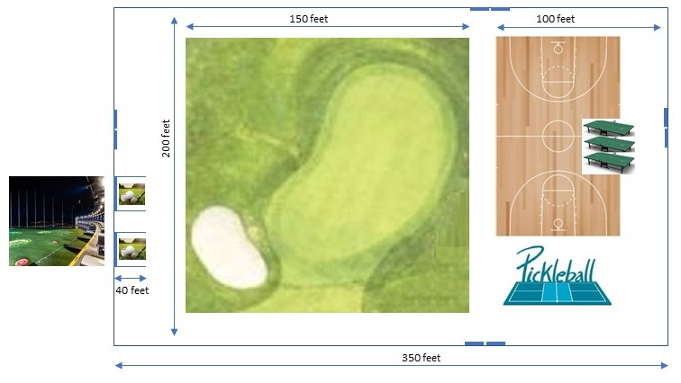

Indoor golf will likely take up the most amount of space - well, depending upon the number of indoor greens. However, it would be possible to combine pickleball, basketball and table tennis into the indoor golf course layout. This would maximize use of floor space, but perhaps would limit concurrent use of the space for all 4 sports. Optimum use of space would be to put 4 greens in the 4 corners of a rectangular shaped gym, and then include space for the other 3 sports in the middle.
A key takeaway for sites which host 4 Sport Challenge events is that the scale of a site can vary greatly. The use of golf simulators or outdoor driving range can drastically reduce the amount of indoor space that is needed. Space can also be reduced by limiting the number of pickleball courts and golf greens, or by making space multi-function (e.g., pickleball courts can share the same floor space as basketball). But larger indoor sites will be able to support more competitors without increasing the time it takes to complete a 4 Sport Challenge event. And with larger sites, it is expected that more spectators would be able to attend an event. Likewise, if a site operates as a retail training centers, more indoor space would allow for more paying customers.
The following is a sample configuration for an indoor facility which has 4 separate golf greens. Drives and approach shots can either be hit using golf simulator technology, or optionally could be hit to an outdoor driving range (e.g., similar to TopGolf). In addition to golf, site also supports basketball court, table tennis and pickleball.

A slightly smaller option supports only 2 golf greens. And for this configuration, pickleball and table tennis would have to share the same space with basketball.

An even smaller option supports only 1 golf green with pickleball and table tennis sharing space with basketball.
